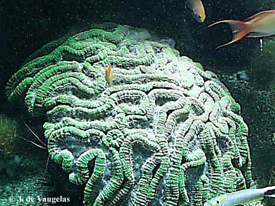
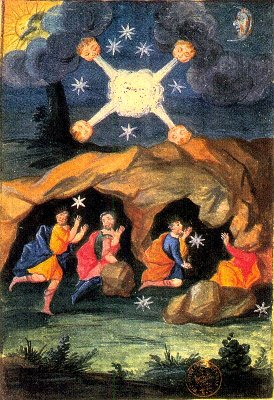
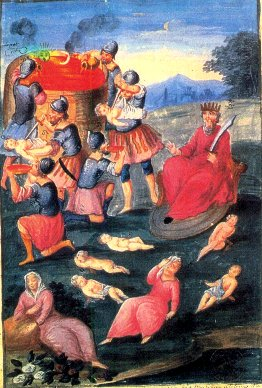
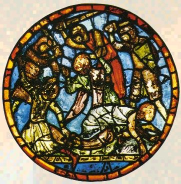
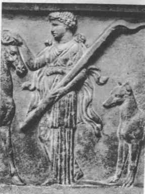

Emblema XXXII.
revu le 11 mai 2004
Corallus sub aquis ut crescit & aere induratur, sic lapis.
(Comme le corail croît sous les eaux et durcit à l’air, ainsi fait la Pierre1.)
Sous les flots siciliens croît une molle plante
Dont les branches, par la tiédeur des eaux, se multiplient.
Le Corail est son nom ; elle apparaît durcie
Lorsque Borée, du pôle âpre, lance le gel.
Changée en une pierre aux rameaux abondants
Elle est rouge et semblable à la Pierre Physique2.
Les philosophes donnent à leur pierre l’épithète de végétale, parce qu’elle végète, croît, augmente et se multiplie à la manière d’une plante. Cela semble aux ignorants étrange et éloigné de la vérité, car il est évident que les pierres ne végètent ni ne croissent de cette façon et ne ressemblent en rien aux métaux liquéfiables3. Mais ceux-là se trompent en jugeant de la sorte : ils pensent que ce qui est ignoré d’eux n’existe pas dans la nature, mesurant l’immensité de l’univers à leur propre capacité. Qui aurait jamais cru qu’une pierre pût se développer sous les eaux ou qu’une plante engendrée en un tel lieu pût se pétrifier, si l’expérience et le témoignage constant des écrivains n’étaient là pour le confirmer ? Où se trouve donc cette force pétrifiante, cette force colorante qui durcit et teint le corail : est-ce dans les eaux, dans l’air ou dans la terre ?4 Il est vraisemblable qu’il s’agit, comme ils l’affirment, d’une plante molle et flexible tant qu’elle est dans l’eau, et cependant de nature terrestre qui, lorsqu’on la coupe et qu’on l’expose aux vents froids, devient cassante comme une pierre. Alors en effet l’air froid et sec dessèche les abondantes parties aqueuses (car ces vents du nord apportent avec eux la sécheresse), et le reste du corps, qui est terrestre, est coagulé par les qualités terrestres de ces vents : la froideur et la sécheresse. En effet, dans le domaine des vertus propres à chaque élément, la terre est seule à posséder le pouvoir de coaguler, qui ne réside ni dans l’eau ni dans l’air5.
La mer donne en outre, en d’autres lieux, trois pierres médicinales qui proviennent en partie du genre végétal, en partie du genre animal, ou qui plutôt sont extraites des domaines secrets de la nature. Ce sont les perles, l’ambre jaune et l’ambre gris6. L’origine et le mode de récolte des perles nous sont connus, mais non ceux des deux autres pierres. On recueille l’ambre jaune sur les rivages de la Suède, après que le Circius ou Corus a soufflé violemment7. Il jaillit sans doute dans la mer des veines de la terre, à la façon de bulles, ou bien la mer l’entraîne comme en lavant, et il est rejeté par les flots sur le rivage, car nous avons vu des minerais de fer et d’argent adhérant à l’ambre, ce qui n’a pu se faire que dans la terre8. Quant à la présence de mouches, de moucherons, d’araignées, de papillons, de grenouilles et de serpents dans certaines parcelles, elle provient de l’influence et de la vertu imaginative du ciel, comme nous l’avons démontré ailleurs9. Ainsi nous avons eu en notre possession cent vingt petits globes d’ambre taillés qui contenaient chacun un certain nombre de mouches, de moucherons, d’araignées et de papillons10 ; une parcelle en contenait même neuf, ce qui ne manquait pas de constituer un prodige remarquable de la nature. L’ambre gris se trouve de la même manière, le fait est indéniable, sur les rivages de l’Inde orientale et occidentale. Certains le rattachent au suc des arbres et à la gomme (comme l’ambre jaune ou succin dont nous avons parlé), mais ceux qui le font provenir des veines de la terre jugent avec plus de vraisemblance. Car on n’a vu nulle part d’arbres produisant l’ambre jaune et gris et cependant il est très assuré que ces arbres, s’il en existe, poussent hors de l’eau en des lieux ensoleillés. Nous rapporterons donc l’un et l’autre ambre à des veines souterraines ou à des pierres, de même que les perles aux zoophytes et le corail aux végétaux11.
La Pierre des philosophes est assimilée à ces pierres et, tout d’abord, au corail12. De même en effet que celui-ci croît dans l’eau et tire sa nourriture de la terre, la pierre philosophique s’est coagulée à partir de l’eau mercurielle et en a pris tout ce qui s’y trouve de terrestre pour son augmentation, en rejetant, par une sorte de transpiration, l’humidité superflue13. La coagulation tend à procurer au corail la couleur rouge que des modernes appellent teinture coralline, de la même manière qu’à la pierre physique qui, au cours de son ultime coagulation, rougit et apparaît avec l’aspect du corail le plus rouge, ce qui est la teinture14. Si le corail demande, pour durcir, le froid et le sec, la pierre réclame le chaud et le sec15. Si l’on augmente ces qualités, elle se liquéfie de nouveau contrairement à la nature des autres pierres qui, certes, se liquéfient, mais se transforment ensuite en verre, ce qui ne convient en aucune manière à celle-ci. Et comme le corail sert à préparer divers remèdes d’une grande efficacité, de même le corail des philosophes a fait passer en lui-même les vertus de toutes les herbes et, pour cette raison, possède à lui seul autant de pouvoir que tous les remèdes tirés de tous les végétaux. Car le soleil céleste qui infuse dans les végétaux leur vertu et leur efficacité médicinales confère à celui qui est son fils et son vicaire terrestre plus de pouvoir qu’à tous les autres. C’est le corail philosophique végétal, animal et minéral qui se cache dans la très vaste mer où l’on ne peut l’apercevoir, afin qu’il ne soit pas exposé aux regards et placé entre les mains des ignorants. Mais il faudra le couper sous les eaux avec la plus grande prudence, pour éviter qu’il ne perde son suc et son sang, et qu’il ne demeure rien qu’un chaos terrestre, sans sa véritable forme16. En cela réside toute la difficulté de s’emparer du corail. Cependant il en est peut-être une autre : je veux parler de l’humidité superflue qui tue la pierre si on ne la sépare, car elle ne laisse pas apparaître le rouge corallin et, tant qu’elle est présente, ne permet pas la coagulation17.
Notes1. C'est la phase de multiplication et d'accroissement qu'aborde ici Michel Maier. L'allégorie avec le corail est d'autant plus tentante qu'il s'agit d'une formation à la fois animale, végétale et minérale. Le corail possède donc, par analogie, les trois ressorts de la philosophie hermétique. Par animale, il faut entendre « anima », c'est-à-dire ÂME, par végétale, ce qui s'accroît grâce à un principe ou une sorte de ferment [voir Chevreul là-dessus], en bref ce que les chimistes du XIXe siècle appelaient un principe minéralisateur. Enfin minérale pour la raison que le corail se présente sous forme de concrétions qu'on croirait cristallines. De là à penser qu'il y ait un rapport de cabale entre le corail et la pierre au rouge, voilà qui ne paraît pas extraordinaire. Evidemment, on ne saurait suivre Maier quand il professe que le corail croît sous l'eau et durcit à l'air, puisque les deux opérations se font sous l'eau. Par ailleurs, Maier a raison si l'on se base sur les règles de la cabale hermétique. Le corail forme l'arbre des eaux : il participe assurément de l'axe du monde par sa base calcaire et des fruits de l'arbre solaire par ses couleurs. Blanc à l'origine, il rougit sous l'influence du soleil. Comme nous le développons infra, note 12, c'est le 6ème travail d'Hercule qui permet de donner la pleine mesure de la haute teneur hermétique du corail. Dans les textes alchimiques, le corail est évoqué par Batsdroff dans le Filet d'Ariane, par Basile Valentin dans son Char de Triomphe de l'Antimoine [à plusieurs reprises]. Albert Le Grand en parle dans le Composé des Composés [en le comparant de façon explicite au Soufre]. Jean d'Espagnet en traite dans sa Philosophie Naturelle Restituée. L'arcane coralin est également évoqué par l'Anonyme de Huginus à Barma. Tollius en parle dans son Chemin du Ciel Chymique. Il est cité, encore, par Salomon Trismosin dans sa Toyson d'Or. Enfin, Bernard Le Trévisan n'est pas en reste, dans son Verbum Dimissum. D'autres textes seraient à citer...
2. On ne saurait deviner combien les rapports sont étroits entre le corail et de nombreux points de symbolisme qui apparaissent dans les traités. Ce qui explique notablement que Michel Maier ait souhaité lui consacrer un chapitre entier. Qu'est-ce que le corail ? Il s'agit de coelentérés, embranchement des cnidaires, qui comprennent, les méduses, les madrépores, les gorgones et les hydres. [Il n'est sans doute pas indifférent d'observer que les termes de méduse, gorgone et hydre ont été employés pour qualifier cet animal des mers chaudes. La méduse - ou Gorgone - rappelons-le, est ce monstre que Persée décapite et dont le sang donne naissance à un produit volatil, le cheval Pégase, et à un produit fixe, Chrysaor dont les noms vulgaires ont déjà été donnés à plusieurs reprises dans nos pages]. Les coraux bâtisseurs de récifs (madrépores) vivent dans une eau chaude [de 18 à 29°, 24° étant la valeur optimale], très pure, dont la salinité reste dans certaines limites, bien éclairée, oxygénée et claire [eau sans sédiments ni impuretés], peu profonde, avec des marées généralement faibles : 1 à 2 mètres. Ces exigences les limitent entre les parallèles 30° nord et sud, et ils se sont développés majoritairement autour des volcans éteints. De cela, nous pouvons déduire là encore des points touchant à notre cabale hermétique. Cette bande de latitude est située presque exactement entre le tropique du Cancer et celui du Capricorne. Or, ces deux signes zodiacaux revêtent une importance majeure dans les époques de l'oeuvre. Pour le Cancer, signe gouverné par la Lune, l'imposition du calorique [lune pleine] doit être du 4ème degré de feu, outre que le Cancer [dont nous faisons un signe d'AIR] est le lieu d'exaltation de Jupiter. Le Capricorne [signe de TERRE selon nous] est le domicile de Saturne et le lieu d'exaltation de Mars. Or, quoique opposés, les deux signes sont liés. Dans le Capricorne, nous avons l'image d'une terre froide, hivernale, dans les profondeurs de laquelle s'élabore le lent et pénible oeuvre de la végétation alchimique. C'est donc que nous sommes déjà après la phase de putréfaction, époque où se forme le Rebis et où il faut « blanchir Latone et brûler ses livres ». L'époque est marquée à la fois par la lenteur et par la chaleur [association Saturne, Mars]. Par ailleurs, cette époque est marquée par une forte insolation [pleine lune]. Or, le hasard a voulu que les coraux se reproduisent pratiquement au moment de la pleine lune : ainsi, le tiers des coraux-madrépores pondent leurs oeufs une fois l'an en un même temps extrêmement court ; la mer en devient laiteuse. Plus exactement, il a clairement été établi que cette synchronisation dépend étroitement des phases de la lune et de la température de l'eau. Ainsi, près de 130 espèces de coraux de la Grande Barrière de Corail d'Australie pondent simultanément lorsque l'eau atteint une température de 26 °C le premier jour après la pleine lune, ce qui arrive dans cette région vers le mois d'octobre. On voit encore un lien entre la couleur que prend la mer à cet instant et le Lait de Vierge dont on a tant parlé [cf. Artéphius, D'Espagnet, etc.]. A noter que rien n'explique encore cette invraisemblable synchronisation qui n'est connue que depuis peu. Là encore, nous voyons le mythe rejoindre l'histoire naturelle. Ce n'est pas tout. Commes les couleurs diverses qui surgissent dans l'oeuvre, le corail présente un aspect protéiforme, sous forme de branches, plateformes étagées, circonvolutions (cerveaux), buissons, boules. Les récifs coralliens n'existeraient pas sans la symbiose qui associe la plupart des coraux avec une algue cellulaire de la famille des Dinoflagellées. Ces algues microscopiques, les Zooxanthelles, vivants entre les cellules des coraux [endosymbiose], leur permettent de se nourrir et de se développer : grâce à la photosynthèse, ces algues produisent du glucose dont le corail se nourrit. En retour, l'algue se nourrit aussi des sous-produits organiques du métabolisme du corail. Cette symbiose permet à ces coraux [qui sont alors dits hermatypiques] de pouvoir ne vivre et croître que grâce à une exposition régulière à la lumière solaire qui alimente alors le processus de photosynthèse. Là encore, on peut tracer un parallèle entre la façon très particulière dont sont nourris les coraux et le Mercure des philosophes qui permet, peu à peu, la croissance de la Pierre. Une température tempérée permet seule la survie du corail. Dans de nombreux traités, les alchimistes insistent aussi sur la nécessité d'une température tempérée et bien égale [ce qui ne veut pas dire que cette température doive se rapprocher du fient de cheval ou de celle à laquelle couvent les poules]. Les couleurs des coraux fascinent par leur diversité : ils sont, par ordre de fréquence marron, vert, crème, gris et bleus. On compte 6 % et 5 % respectivement de coraux jaunes et pourpres et 1 % de coraux rouges. Là encore, la rareté de cette couleur est à l'égale du peu de réussites des apprentis alchimistes dans l'obtention de la Pierre au rouge. Quant au corail noir, c'est le plus rare [0.27 %] et il mérite qu'on s'y attarde un peu. Le corail noir fait partie de l'ordre des Antiphathaires. Ses polypes sont petits, munis de tentacules non rétractiles. Les colonies observées dans les eaux Polynésiennes ont 2 formes distinctes : la première ressemble à un buisson arborescent de couleur brun sombre à noire ; les branches, nombreuses et ramifiées, présentent un aspect neigeux.
La seconde a la forme d’une longue tige cylindrique semblable à un ressort distendu. On la dénomme quelque fois gorgone fouet bien qu'elle n'appartienne pas à cet ordre. Certaines colonies quasi centenaires atteignent cinq mètres de longueur. Quant à la calcification proprement dite, elle est à l'égale du CORPS de la Pierre, sorte de squelette silicato-alumineux. Chez les coraux, c'est du carbonate de calcium qui est synthétisé et les récifs coralliens recouvrent environ deux millions de kilomètres carré de la surface du globe en abritant un bon quart de toutes les espèces marines. Ils constituent ainsi le plus grand édifice jamais construit sur Terre par des êtres vivants.A tout cela, on s'empresse d'ajouter que ces réflexions sur le corail et ses rapports avec l'Art sacré doivent être compris par l'esprit et en aucune manière à la lettre. Bien sûr, Michel Maier ne pose l'analogie corail - lapide philosophorum qu'à cause de l'aspect pierreux du corail, qui se développe dans l'eau salée, et dont il croit que la forme pétrée est due à l'action de l'air. On peut trouver un point supplémentaire - là encore ignoré forcément par Maier - de relation entre le corail et la Pierre. Il s'agit de l'époque où le principe tingeant [Soufre rouge] pollinise littéralement l'enveloppe ou Soufre blanc [dont nous rappelons qu'il est l'équivalent du principe Sel de Paracelse ou de l'Arsenic de Geber]. On se souvient de la fable où Pallas-Athéna sort toute armée du cerveau de Jupiter [c'est-à-dire de son esprit] sous le

FIGURE I
(le cerveau de Jupiter)coup d'Héphaistos. Nous avons traité de ce point dans l'Atalanta, VIII. Et pour conclure que le mythe d'Athéna devait avoir quelque rapport avec le Soufre rouge. Eh bien ! Que l'on voit de quelle manière se reproduit le corail - à la pleine Lune - et l'on aura une allégorie tout en même temps qu'une analogie remarquable de la manière dont féconde, pour ainsi dire, le Soufre rouge. Et une ville se profile à l'horizon, qui, au moment où Athéna sortait « toute armée » du cerveau de Jupiter, recevait une pluie d'or [comprenez les oeufs de corail] : Rhodes. Ville hermétique, s'il en est, où Bernard Le Trévisan a situé le moment de sa vie où il comprit l'oeuvre [cf. Philosophie Naturelle des Métaux]. Quand on sait que le corail peut prendre la forme externe des circonvolutions cérébrales, on croit rêver de ce mimétisme spirituel totalement fortuit.
L'évocation de Borée qui « lance son gel » a son intérêt qui semble se situer dans le fait que ce vent du Nord intervient en dernier, en symbolisant la coagulation de l'eau mercurielle.
3. les cristaux, pourtant, représentent ce monde de végétation croissante dont parle Maier [cf. Cristallogénie]. Les cristaux naissent d'une eau sursaturée en sel. Par cabale, l'EAU se transforme en TERRE. Et le plus souvent, ces cristaux apparaissent à la surfaced u composé, surface nommée pour cela l'AIR des sages [cf. Philalèthe]. Et le sel, dissous, peut tenir d'un métal liquéfié : la chaux métallique ; l'eau salée n'est évidemment pas l'eau de mer, mais l'eau permanente des alchimistes, agent vital pour la croissance de la Pierre.
4. cette force tient au carbonate de calcium, qui contracte des rapports avec l'albâtre des Sages de Fulcanelli et qui explique pourquoi - selon le grand Adepte - les Egyptiens considéraient le chat comme un animal sacré. Mais, la faculté d'élaborer cette matrice calcaire tient autant de l'EAU que de l'AIR, transmetteur des rayons solaires. Du reste, les anciens chimistes avaient remarqué qu'il se produisait une effervescence quand on mettait de l'acide au contact du corail :On met au rang des Effervefcences froides, fi il y en a, celle qui fe fait lors que le vinaigre penetre le Corail ; je puis dire n'y avoir reconnu aucun refroidiffement. A la vérité il eft affez furprenant qu'une fi grande ébulition, on agitation de parties, ne caufe point de chaleur fenfible, mais on doit confiderer que le Corail ayant des Pores affez grands, peut eftre facilement diffout, & qu'ainfi il ne fe fait point de grand froiffement de ce corps par les Acides, ce qui feroit neceffaire pour exciter une chaleur confiderable,5. Ce problème des vents est un des pivots de l'Art. La plupart des peuples de l'Antiquité ont personnifié et divinisé les vents. Les Orientaux les représentaient généralement sous la forme de génies fantastiques. Les Grecs en faisaient des génies ailés. Les vents étaient soumis à l'empire d'Eole [la région éolienne est la côte sud du Pont-Euxin, là où on situe la mythique Troie ; là où est tombée la pierre noire de Pessinonte] qui les tenait prisonniers dans les îles Eoliennes ou qui les déchaînait sur ordre de Zeus ou de Poséidon. [Eole est fils de Poséidon. C'est donc l'AIR issu de l'EAU. Il règne sur ses sujets, tumultueux, enfermés dans une caverne des îles éoliennes. Il faut, naturellement, prendre garde à ne pas confondre la région éolienne et les îles qui se situent au nord de la Sicile...Quoi qu'il en soit, l'idée générale à retenir du mythe d'Eole, c'est qu'il est le symbole du Soufre contenu dans l'Eau des Sages, prêt à se déverser, en pluie d'or, sur injonction de Zeus, c'est-à-dire au moment où la Sagittaire décoche sa flèche ou, encore, à l'époque où la mer devient laiteuse, par une nuit de pleine lune, en octobre - sous le signe du Scorpion -, lorsque les coraux déchargent leurs oeufs]. Mais le rapport de cabale va plus loin, comme on va le voir infra. Dès les temps homériques, les Grecs ont distingués quatre vents principaux en plus d'Eole:
Quelques-uns fe fervent dans cette Operation, au lieu du vinaigre, de la lotion Acide du Beure d'Antimoine, ou de l'Efprit de Vitriol tout pur, mais comme ces Efprits laiffent beaucoup d'acreté aux préparations du Corail , j'eftime qu'il vaut mieux fe fervir du vinaigre diftillé.Cours de Chymie, Nicolas LemeryEOLE
Fils d'Hippotes, dans l'Odyssée, il habite une île flottante; il y reçoit Ulysse, et lui fait cadeau d'une outre merveilleuse dans laquelle étaient enfermés tous les vent contraires à sa navigation. Mais pendant le sommeil d'Ulysse, ses compagnons poussés par la curiosité, ouvrirent l'outre et laissant ainsi s'échapper tous les vents qui déchaînèrent une série de tempêtes. On connaît d'autres Eole. Tel celui, fils d'Hellen, qui forme une des branches de la nation grecque [Hellen est fils de Deucalion et Phyrra - cf 1, 2, 3, 4, 5, 6,].BOREE [froid et sec]
Vent du nord, fils d'un Titan et de l'Aurore; il enleva Orithye, fille d'Erechthée dont il eut de nombreux enfants : Chioné (la neige), Aurai (les brises), Zéthès, Calaïs [1, 2,], et Hoemos les trois vierges hyperboréennes. La Thrace [jeu de mot avec le feu grégeois ; voir qrakiaV, pierre qui s'enflamme dans l'eau, cf. Atalanta, I] était son lieu de séjour favori mais il était adoré en divers pays. A Athènes il avait un temple près de l'Ilissos ; il figure sur la tour des vents. On le représentait comme un vieillard morose, ailé, barbe et cheveux couverts de neige, vêtu d'un robe flottante. Parfois il avait des serpents en guise de jambes. [Nous l'avons dit ailleurs, Borée contracte des rapport avec le Mercurius senex. Le fait que ses cheveux soient couverts de neige est une indication sur la transition entre le régime de Saturne et celui de Jupiter]NOTOS (ou notus) Vent du sud, sud ouest [chaud et humide]
EUROS (ou Eurus) Vent de l'est, sud est, le « vent qui brûle » [chaud et sec]
ZEPHYR Vent d'ouest.
Dans l'Iliade, Zephyros est un vent violent ou pluvieux. Plus tard on le considéra comme un vent doux et léger, une brise tiède qui amenait la fonte des neiges. On le représentait sous la figure d'un jeune homme aux ailes diaprées, le front couvert de violettes et de primevères, glissant à demi nu à travers les airs et tenant à la main une corbeille de fleurs printanières. On faisait de lui l'amant de Chloris et le père de Carpos. Il avait un autel à Athènes et l'on voit encore son image sur la frise de la tour des vents. A noter que l'on peut rapprocher Zéphyre du dieu Eros, fils d'Erèbe et de la Nuit. [humide et froid]On aura reconnu sans peine les Eléments de Platon, sous les étiquettes entre parenthèse de ces vents. On les retrouve sur maints détails d'iconographie, par exemple, sur une gravure du livre fabuleux d'Abraham Juif [qui, selon Fulcanelli, n'a pas existé et serait une invention de toute pièce du pseudo Flamel ; puisqu'il est pratiquement acquis que ce n'est pas Flamel qui est l'auteur des livres qu'on lui attribue - cf. Fig. Hier.].

FIGURE II
(figure 7 du Livre d'Abraham Juif)L'image est très claire au vu de tout ce que nous avons dit, touchant aux vents. On observe avec netteté les sujets tumultueux dont on a parlé à propos d'Eole. Résumons à présent les attributions à appliquer entre les vents et les éléments :
vent qualité élément Eole fils de Poséidon quintessence Borée [Nord] froid et sec AIR + TERRE Notos [Sud Ouest] chaud et humide EAU + FEU Euros [Sud Est] chaud et sec FEU + TERRE Zéphyre [Ouest] humide et froid AIR + EAU Si nous devions classer ces vents au plan chronologique, nous placerions d'abord Zéphyre, parce qu'il est celui qui présentre le plus déléments de la série mercurielle et aussi parce qu'il annonce le Printemps. Puis, nous placerions les vents du Sud, en situant Notos avant Euros, et nous finirions par Borée, parce qu'il congèle l'eau mercurielle. Bien sûr, ce schéma est pure supputation...
6. sites consultés : http://www.aci-multimedia.net/feminin/ambre1.htm - http://www.rambaud.fr/guide%20lexique.htm - la perle est une concrétion globuleuse, brillante et dure, formée de nacre qui s'est agglomérée en couches concentriques autour d'un corps étranger entre le manteau et la coquille de certains mollusques, en particulier des huîtres, et qui est utilisée en joaillerie. Elle est composée de 90% de cristaux de carbonate de calcium (aragonite), de 5% de protéine organique (conchioline) liant les cristaux d'aragonite et de 2% d'eau ; on y trouve des traces de sodium, magnésium et strontium.
Les hommes ont toujours été fascinés par l'ambre auquel ils ont très tôt, attribué des pouvoirs magiques, quasi divins. Dès l'âge de pierre il fut utilisé dans un but décoratif et curatif et fit l'objet, durant l'Antiquité, d'un commerce important. En Europe, on le trouve dès le Néolithique, mais il est surtout abondant à l'âge du bronze, où on peut le trouver dans les sites Mycéniens de la Grèce, particulièrement dans des tombes, à Tholos, qui ont livré de l'ambre en abondances (perles de colliers,...). On en a retrouvé à Mycènes, en Grèce, Crête, Italie, Irlande, Péninsule Ibérique, Allemagne,... Mais aussi Inde, Perse,... L'analyse chimique a montré que la majorité de l'ambre du monde méditerranéen provenait de la Baltique.
L'ambre gris [glaesum] est constitué par des concrétions intestinales cireuses de divers cétacés, (en particulier le cachalot) formée par une matière noir que sécrètent les différents mollusques dont ils se nourrissent. L'ambre gris a une légère odeur de musc et fond rapidement ; on le trouve, flottant sur les eaux, dans l'Océan Indien, près des côtes d'Espagne. L'ambre gris, qui se conserve assez mal, était utilisé, au Proche-Orient et à Rome, dans la fabrication de parfums, il entrait aussi dans les recettes de la pharmacopée.
Le cas de l'ambre jaune [electrum, sucinum] semble plus compliqué. Il tient à la fois du minéral et du végétal. Au IVe siècle av. J.-C., Aristote le classait avec les substances végétales et en parallèle avec ces autres résines que sont la myrrhe et l'encens. Pline fait un classement identique. Thalès [IVe siècle av. J.-C.] découvre que l'ambre attirait les corps légers lorsqu'on les frottait fortement : l'ambre était donc doué de propriétés électrostatiques. L'ambre en Grec se dit hlektron dont dérive le terme électricité [notez que le terme de hlektron, renvoie aussi à un alliage d'or et d'argent, autrefois attribué à la planète Jupiter, cf. Berthelot, Origines de l'Alchimie]. Le savant Russe Lomonosov considérait que l'ambre était une résine fossile provenant d'un arbre, opinion confirmée en 1811 par le savant Wrede. Il y a 40 millions d'années, les régions du centre et du nord de l'Europe étaient couvertes de forêts au sein desquelles se trouvaient de nombreux ancêtres de nos pins et épicéas ; 10 millions d'années plus tard, ces forêts furent en parties englouties par les eaux. Voilà qui explique que le littoral de la Baltique soit riche en ambre, une résine fossilisée, dans laquelle divers insectes, arachnides, etc. attirés par son odeur en sont restés prisonniers, comme ont pu y être inclus par dépôt, des feuilles, bois, pollens, plumes, etc. La résine, qui est un excellent agent de fossilisation, a conservé ces différentes inclusions animales et végétales. Puis, suivant un processus long, pas très bien élucidé et faisant intervenir de nombreux éléments, la résine au bout de plusieurs millions d'années se transforme en ambre.
A l'état naturel, les modules d'ambre sont translucides, transparents même, trouble avec des colorations diverses entre le brun rougeâtre et la teinte miel résultant de la quantité et du contenu des bulles qui y sont emprisonnées. Ce qui donne une infinie variété de tons et de nuances qui changent en fonction de la lumière que les frappe. La résine fossilisée devient dès lors un minéral qui est facile à tailler et qui séduit par sa couleur et son éclat. Devant tant de beauté, l'homme se servit de l'ambre pour en faire des parures, des bijoux [colliers, perles, talismans divers].
Les Gaulois portaient des Talismans en ambre, les Romaines en mettaient dans leurs cheveux ou portaient l'ambre autour du cou pour éloigner les mauvais esprits. Au Moyen Âge, les artisans de Bruges se rendirent célèbres par la fabrication de chapelets d'ambre diffusés par les chevaliers Teutoniques. Bref, tout comme la Pierre philosophale, L'histoire de l'ambre est encore une de ces histoires extraordinaires qui ont alimenté l'univers magique des hommes depuis des millénaires.
On pourrait encore gloser sur des associations qui pourraient paraître déplacées. Par exemple, hlektwr, en proche assonance phonétique, qui signifie le brillant, c'est-à-dire le Soleil, étiquette d'Apollon et du Soufre rouge, autre nom du FEU contenu dans le Mercure, ou rayon igné solaire que l'Artiste doit savoir prendre au filet pour le coaguler dans la résine appropriée [d'où d'ailleurs, la relation à l'ambre que donne Michel Maier]. Ou encore, Hlektra, dont on connaît plusieurs acceptions, parmi lesquelles l'une, qui n'est pas la moins intéressante dans l'Art sacré, n'est autre qu'Electre, qui, unie à Zeus, mit au monde Dardanos [premier roi de Troie] et Iasion, amant de Déméter [1, 2, 3, etc.] et père de Ploutos [1, 2, 3, 4, 5, 6, 7,]. Cette liaison est d'autant plus riche de cabale que Iasion s'unit à Déméter dans un champs trois fois labouré et que Plutos [Ploutos] est une des divinités majeures de la fertilité et de l'abondance. Il est clair que ce champ trois fois retourné ne peut être que la terre feuillée des Sages, celles qu'ils ont voulu faire passer pour la terre foliée de tartre. Que Déméter est l'équivalent de Cérès ou d'Isis [cf. Fontenay], comme le rappelle à propos Fulcanelli dans le Mystère des Cathédrales : « Cérès, Isis, Déméter, trois têtes sous le même voile »...Que Plutos n'est pas Pluton, le dieu de l'Enfer, mais bien plutôt celui de la génération, l'agent de la réincrudation. Ploutos symbolise avant tout la richesse ou le trésor du coeur, c'est-à-dire de l'Âme. Il contracte donc des rapports - par cabale - avec le Soufre rouge alors qu'on aurait cru, de prime abord, que sa symbolique aurait davantage relevé du séjour des morts et du monde souterrain. D'ailleurs, les deux ne sont pas incompatibles : le coup de génie des Scolastiques médiévaux, oeuvrant dans leurs monastères, a été de proposer avec l'invention de la pierre philosophale, un exact pendant pétré de la résurrection du Christ, porté sur la croix comme la matière est portée au creuset, avec trois pointes de fer...Pernety parle de Iasion dans son Dictionnaire :Jasion. Fils de Jupiter et d’Electre, fille d’Atlas, épousa Cybelle, dont il eut un fils nommé Corybas. Cérès, dont il fut très aimé, lui donna Plutus; et Jasion fut enfin mis au rang des Dieux. Voyez les Fables Egypt. et Grecques dévoilées, liv. 4, ch. 2 et 3.Notez qu'ici, Pernety attribue aussi à Iasion une union avec Cybèle [l'athanor secret] dont il a pour fils Corybas [allusion à Corybante, « fou furieux », étiquette du premier Mercure ou KorubaV : sortes de démons associés à Rhéa - Cybèle. Souvent rapprochés des Cabires et des Courètes, ils ont veillé, à ce qu'il paraît, sur l'enfant Zeus, à l'instar de la chèvre Amalthée], que l'on peut rapprocher de Korh, c'est-à-dire Perséphone. L'allusion est permise puisque Korè, comme chacun sait, est la fille de Déméter. Quant à Iasion [Iasion], son nom est riche de cabale. Il se rapproche de IasioV, père d'Atalante. Un autre fut le père d'Amphion. Amphion doit être rapproché d'Orphée car il fut remarqué par Apollon qui lui offrit une lyre. La légende affirme que Zéthos et Amphion tuèrent Lycos, fils de Cadmos, et attachèrent son épouse, Dircé, par les cheveux aux cornes d'un taureau sauvage qui la traîna sur les rochers jusqu'à ce que mort s'ensuive. On ajoute qu'Amphion [qui serait donc l'équivalent du Mercure] fut tué par les traits justiciers d'Apollon et d'Artémis pour avoir insulté leur mère, Léto [le Rebis, dissous dans le Mercure, l'ensemble formant le Compost philosophal ou double Mercure]. Par parenthèse, on notera que dans un célèbre manuscrit du XVe siècle, le Donum Dei, attribué à un franciscain alchimiste, on trouve ces tableaux de l'art...Enfin, un 3ème Iasios est considéré comme le père d'Io.Le nom de Iasion lui-même est tissé de cabale, puisqu'on peut le décomposer en IaV et Ion : violette, par redoublement [proche de ioV, venin, rouille du fer, c'est-à-dire colcothar...].
7. Caurus, vent du Nord Ouest. Identifié aussi comme Corus. En revanche, Circius renvoie à Circius mons, chaîne du mont Taurus [on aura saisi l'allusion hermétique ; il s'agit d'une allusion à la Lune, qui est exaltée dans le Taureau]. Il ne s'agit là que d'une conjecture.
8. Très curieusement, Fulcanelli parle du fer électrolytique de Suède, qui contient entre 7.28 et 7.32 g. de Soufre rouge. Fulcanelli nous dévoile pratiquement l'arcane dans ses Demeures Philosophales :« C'est ainsi, par exemple, qu'un kilogramme d'excellent fer de Suède, ou de fer électrolytique, fournit une proportion de métal radical, d'homogénéité et de pureté parfaites, variant entre 7 grammes 24 et 7 grammes 32. Ce corps, très brillant, est doué d'une magnifique coloration violette...analogue, pour l'éclat et l'intensité, à celle des vapeurs d'iode. » [DM, II, p. 287]
C'est l'un des mystères que Fulcanelli a laissé derrière lui, du même ordre que ses expériences spagyriques, dont il parle au tome I des Demeures Philosophales.
9. Par un hasard curieux, tous les animaux - insectes ou araignées, reptiles - cités par Maier ont un rapport avec l'Art sacré. Tollius n'a-t-il pas dit qu'avant de se livrer à une expérience, il vérifiait si une mouche ne volait point dans la pièce ? le mot « moucheron » [alucita] n'est guère éloigné de la matière d'où l'on tire les deux sels par l'opération de Persée. Nous avons parlé ailleurs des batraciens [Fontenay].
10. sur le symbolisme du papillon, voyez la Tour Rivalland, section Fontenay ; sur l'araignée, cf 1, 2, 3, 4, 5, 6, 7.
11. l'hypothèse du végétal est fausse, concernant le corail. Pour autant, il existe bien un principe de croissance [vegetus] qui explique l'accroissement progressif des récifs coralliens.
12. Que nous racontent les légendes sur le corail, que l'on puisse mettre en parallèle avec le Lapis ? Le corail [en latin corallium ou coralium ; en grec korralion] se rapproche par assonance de korax, le corbeau. Le texte des Lapidaires Grecs [R. Halleux et J. Schamp, Les Belles Lettres, 1985] nous sera ici de quelque utilité. Dans le Lapidaire Orphique [Orphei Lithica], nous trouvons au § 510 [kouralion], un texte sur le corail [pp. 109-115]. Cette substance appelée koraliov, kouraliov ou kouralliov est notre corail et tout spécialement la variété rouge [moins fréquente que d'autres, cf. supra]. On l'appelait aussi la magnésie du Sipyle. A partir du Ier sècle de l'ère vulgaire, on évoque des plantes marines qui se pétrifient et qui durcissent au contact de l'air [c'est ce que rapporte Maier ; il a emprunté à Dioscoride, V, 121 et à Pline XXXII, 22]. Ce fut en 1753 que le Sieur de Peyssonnel, dans un manuscrit intitulé Traité du Corail, qu'il présenta à la Société Royale de Londres, montra que les coraux n'étaient ni des pierres ni des végétaux, mais des animaux. D'emblée, le corail est posé comme le descendant de Persée ; il possède le pouvoir démousser le dard des scorpions et de rendre l'aspic innofensif [la cabale hermétique est en parfait accord avec ces idées. C'est bien en octobre, sous le signe tropical du Scorpion, que la pluie d'or arrose Rhodes, au moment où le Mercurius senex laisse place à plus jeune que lui ; cf. Donum Dei, planche III]. Le corail est réputé être par Phoibos [Apollon, épithète du Soufre rouge] le plus merveilleux des êtres. Le corail pousse d'abord comme une herbe verte [Aureum vellus ; le Lion vert] ; lorsqu'il vieillit, il se met à nager jusqu'à ce que la rive le rejette [cf. Atalanta, XXXI où l'on voit sur la gravure, le Roi couronné du diadème]. C'est là qu'il durcit, tout en gardant sa forme végétale et l'écorce qu'il avait [libros]. L'auteur en vient ensuite à l'allégorie de la Gorgone [cité aussi dans Evax, 7] : c'est au pied des falaises de l'Atlas que Persée décapita la Gorgone à la chevelure serpentine. Il est question d'Athéna [demi-soeur de Persée et surnommée l'infatigable, épithète consacrée à la déesse] puis de Persée « issu de l'or » [enfant de Danae et de Zeus, Zeus s'étant rendu aurpès de Danae sous forme de pluie d'or alors qu'elle était enfermée dans une tour d'airain. Rapprochez cette légende des pluies d'or à Rhodes au moment de la conception de l'embryon hermétique]. Persée arrive à décapiter la Gorgone grâce à un instrument que lui a remis Hermès, chose notable : la serpe de Cyllène [selon d'autres, il devait la serpe à Héphaïstos, c'est-à-dire que l'instrument de contention est le FEU des Sages ; Cyllène est une montagne d'Achaïe et d'Arcadie, aujourd'hui Ziria, où naquit Mercure - HermhV. On doit rapprocher, du reste, Kullhnh - Cyllène - de kulloV, tordu, déformé en parlant d'Héphaïstos ; et de KulloV, temple dédié à Aphrodite]. Cette serpe, issue d'une montagne, ne peut être que le V.I.T.R.I.O.L. des alchimistes, si l'on nous a bien compris. Le rapport entre Héphaïstos et Aphrodite, via Mercure, désigne expressément le dissolvant universel.«Partir vers le sombre palais du fils odieux de Cronos, tel était le destin que réservait la morte à ses nombreuses visites.» [Orphei Lithica, 555-557]
C'est ici parler de la dissolution totale, de la putréfaction, en évoquant Hadès. Persée va ensuite plonger la tête de Gorgone dans la mer : aussitôt apparaît un bain de pourpre qui transforme l'EAU en pierre [TERRE] :
« au sang donc le corail dut sa rouge couleur » [Orphei Lithica, 573]
Comment nommer autrement le principe de teinture ? Il est question ensuite, à nouveau, d'Athéna, sous les expressions de «fille aux mille ruses » ou encore de « preneuse de butin », un peu comme si Athéna symbolisait une substance s'emparant du principe actif d'une autre, par affinité supérieure [il est évident que nous extravagons ici, mais c'est l'idée hermétique qui doit être retenue, car c'est ainsi que se forme un SEL]. Ici s'ajoute un trait : le caractère organoleptique, pour ainsi dire, du corail : ainsi, de la propriété magique du corail de protéger dans les combats [nous verrons la mère d'Achille en tirer un parti maladroit, puisqu'elle oublia de protéger les chevilles du héros], ou encore de celle de protéger contre les dangers de la mer [voyez le voyage des Argonautes, l'Odyssée dont nous parlerons peut-être plus tard...]. Il est question ensuite d'Arès [le dieu belliqueux qui symbolise le Mercure dans son premier état, avant que les colombes de Diane - cf. Philalèthe - ne viennent tempérer son acrimonie - le vinaigre très aigre de tant d'alchimistes] puis de Nérée [curieusement d'ailleurs, Nérée est évoqué comme un dieu tourmenteur alors qu'on le gratifie ailleurs des épithètes de juste, sage ou pacifique. Or, Nérée est une divinité antérieure à Poséïdon ; fils de Pontos et de Gaïa - n'oublions pas que Pontos est fils de Gaïa puis qu'il s'unit à sa mère ; on le connaît encore sous le nom de mer Noire - Pont-Euxin - et pour les alchimistes, il figure l'Eau Pontique, premier état du Mercure]. Dès lors, il apparaît probable qu'il doit effectivement tourmenter les vagues. Qu'on y jette quelque fragment de corail, le nautonier échappera alors à la furie des flots. Tel est le message hermétique que nous délivre le texte de l'Orphei Lithica. Voici venir à nouveau Athéna [Tritogénie l'intrépide, littéralement « née près du lac Tritonis ». On peut y voir un parallèle avec l'opération suivante : le Compost philosophal est composé de trois espèces de matière : l'une qui sert de conducteur est le premier Mercure, c'est-à-dire Arès ou encore Nérée ; l'autre qui est le Soufre blanc et qui représente la TERRE de la Pierre, dans laquelle on peut voir Korè - Perséphone, issue de Déméter. Enfin, la troisième qui est le Soufre rouge, ou principe de teinture rouge du corail et agent de pétrification, d'où l'allusion incessante à la Gorgone - symbolisé en l'occurence par Persée et sa demi-soeur, Athéna. Notez l'ambivalence fatale entre le Soufre blanc et le Soufre rouge, tous deux porteurs du principe de pétrification : le Soufre blanc, en un sens, est l'équivalent de l'albâtre des Sages de Fulcanelli ou véritable stibium de Tollius - il s'agit de la Toyson d'or, tant convoitée par Jason et sa petite bande, les Argonautes, - tandis que l'autre est l'Âme même de la Pierre, car déterminant son orientation]. Athéna est aussi appelée tritogeneia [la liaison est expliquée par la naissance d'Athéna le troisième jour d'Hécatombe. On y a vu, en outre, une allusion à la sortie du chef de Zeus - tritw éolien = kejalh].
¯
Mais il y a plus : on peut deviner entre Athéna et Artémis un rapport de cabale, par le truchement d'Hécate [Ekath]. Fille d'Asteria, Hécate a été assimilée à l'Artémis qui préside aux naissances et gardienne de foyer. Par la suite, le symbolisme d'Hécate s'est modifié et on y a vu une Séléné qui deviendra souveraine d'orgia, de magie et de sombres enchantements. Le symbolisme hermétique s'enrichit de l'assonance phonétique avec ekatombh [hécatombe, cf. supra] ou sacrifice de cent boeufs, plus généralement grand sacrifice. Dans l'iconographie alchimique, ce type de scène se rencontre dans le Livre d'Abraham Juif.

FIGURE III
(figure 4 du Livre d'Abrahma Juif)C'est la scène, bien connue, du massacre des Innocents. Fulcanelli rapporte ceci dans le Mystère des Cathédrales :
« Quatrième figure - Est dépeint un champ, auquel y a un roy couronné, habillé de rouge à la Juifve, tenant une espée nue ; deux soldats qui tuent des enfans de deux mères, qui sont assises à terre, pleurans leurs enfans ; et deux autres soldats qui jettent le sang dans une grande cuve pleine dudit sang, où le soleil et la lune, descendans du ciel ou des nues, se viennent baigner. Et sont six soldats armez d'armure blanche, et le roy fait le septiesme, et sept innocens mort, et deux mères, l'une vestie de bleu, qui pleure, s'essuiant la face d'un mouchoir, et l'autre, qui pleure aussi, vestue de rouge ». [pp. 97-98]
Il n'est pas douteux que les deux mères soient les symboles des lieux d'exaltations planétaires du Bélier [vitriol romain] et du Taureau [vitriol bleu], c'est-à-dire du Soleil et de la Lune. Les sept soldats sont les hiéroglyphes des chaux métalliques, le Roi figure le Soufre en puissance. Il y a donc d'un côté les sept métaux connus des Anciens et de l'autre, leur forme « corrompue », symbolisée par les soldats. Fulcanelli revient sur le massacre des Innocents, lorsqu'il évoque le bain des astres, à propos du portail de la Vierge de Notre-Dame de Paris : il y reconnaît la condensation de l'Esprit universel ainsi que l'allégorie simplifiée que nous donne à voir la figure III. Voici un extrait significatif :
« Mais on ne peut obtenir cet Esprit, ce sang rouge des enfants qu'en décomposant ce que la nature avait d'abord assemblé en eux. Il est donc nécessaire que le corps périsse, qu'il soit crucifié et qu'il meure si l'on veut extraire l'âme, vie métallique et Rosée céleste, qu'il tenait enfermée. [...] » [Myst., p. 138]
Ce passage nous permet de donner un sens plus précis à la rosée de mai, par laquelle nous définissions le Mercure jusqu'à présent. Ce n'était pas faux , mais incomplet. Cet emblème XXXII de Maier fait voir que la rosée céleste n'est autre que cette âme métallique. On récolte, ou plutôt on extrait cette vie métallique à l'époque propice, en mai selon le calendrier vulgaire, qui correspond en fait au mois de décembre, lorsque le soleil traverse le signe tropical du Sagittaire : le centaure fabuleux décoche alors sa flèche, selon ce que nous en avons dit à la section Fontenay. Fulcanelli revient une dernière fois dans son opus I, sur le massacre des Innocents, à propos d'un vitrail de la Sainte-Chapelle de Paris, aux verrières Sud, où effectivement l'allégorie paraît correspondre à la vérité hermétique dégagée par cette « forêt de verre ».

FIGURE IV
(Sainte-Chapelle de Paris)Dans le tome II des Demeures Philosophales, Fulcanelli reprendra une dernière fois le thème élaboré par Nicolas Flamel, en examinant le caisson 4, 3ème série, du grimoire lapidaire de Dampierre-sur-Boutonne :
« Qu'il [l'Artiste] porte, de préférence, son attention sur le mercure, que les philosophes ont tantôt appelé double, non sans cause, tantôt ardent ou aiguisé, et acué de son propre sel. Il doit savoir, avant d'effectuer la solution du soufre, que sa première eau, - celle qui lui a donné l'or philosophique - est trop simple et trop débile pour servir d'aliment à cette semence solaire. Et afin de vaincre la difficulté, qu'il s'efforce de comprendre l'allégorie du Massacre des Innocents, de Nicolas Flamel, ainsi que l'explication qu'en donne Limojon, aussi clairement que peut le faire un maître de l'art [...] » [DM, II, pp. 91-92]
Fulcanelli cite ici la Lettre aux Vrais Disciples d'Hermès, de Limojon de Saint-Didier. Et il nous permet de mieux comprendre ce que nous écrivions tantôt, en commentaire de cette Lettre et que nous reproduisons ici par souci de simplification :
Lorsque Limojon dit d'une part que « La lunaire est le Mercure blanc, le vinaigre trés-aigre est le Mercure rouge » et que d'autre part « le Mercure blanc est le bain de la lune, et que le Mercure rouge est le bain du soleil », on est en droit d'exprimer une légitime perplexité...Ce vinaigre très aigre ne peut être le Mercure rouge que dans la mesure où le Soufre rouge y a été infusé, ce qui le rend d'ailleurs équivalent, en terme de cabale, au Lion rouge tandis que le Lion vert correspond à la Lunaire, c'est-à-dire au Mercure commun. Mais alors on ne comprend plus exactement ce qu'a en tête Limojon quand il décrit les bains de la lune et du soleil...Peut-être l'explication tient-elle aux régimes de température ? Et alors, le Mercure blanc correspond-il, sans doute au régime de la Lune et le Mercure rouge, au régime du soleil, phase ultime de l'oeuvre ? A ces questions, nous ne prétendons pas apporter de réponse décisive et nous ne pouvons que les soumettre à la sagacité du lecteur. Simplement, nous ferons remarquer que cette opération présente du rapport avec le Massacre des Innocents que décrit Flamel [...]Il nous faut faire ici un effort de réflexion. Les deux Mercure sont précisément cités : la Lunaire d'une part, et le vinaigre très aigre d'autre part. Quelle relation s'établit entre les deux ? Question à laquelle les alchimistes ne nous ont pas donné de réponse...Le problème est ardu à la fois à comprendre et à résoudre : il tient au fait - que nous avons relevé supra - que deux Soufre sont infusés dans le Mercure et que l'un des deux Soufres, celui qui représente « la Lunaire » est congénaire au Mercure lui-même, où du moins, dans son premier état, à une partie de celui-ci. Voyez ici les Fig. Hiér. De Flamel. Dans le commentaire du Mutus Liber, on a été amené, par ailleurs, a supputer que l'envie doit être comprise dans le sens de désir [regretter, déplorer une perte] qui nous renvoie aux pleurs des mères du massacre des Innocents de Nicolas Flamel, c'est-à-dire à l'époque de l'introduction du Corps et de l'Âme dans l'Esprit. Une autre citation de la Lettre vaut d'être citée :«...je veux vous révéler un secret...Les uns se sont contenté de dire, que de leur liqueur on en fait deux Mercures, l'un blanc, et l'autre rouge. Flamel a dit plus particulièrement qu'il faut se servir du Mercure citrin, pour faire les imbibitions au rouge ; il avertit les enfants de l'art de ne pas se tromper sur ce point ; il assure aussi qu'il s'y serait trompé lui-même, si Abraham Juif ne l'en avait averti...Je vous ai développé un grand mystère...le Cosmopolite l'a touché fort spirituellement par une fameuse allégorie en parlant de la purification et de l'animation du Mercure : Cela arrivera, si tu donnes à dévorer à notre vieillard l'or et l'argent, afin qu'il les consume, et que lui-même enfin devant aussi mourir soit brûlé...»
La purification et l'animation du Mercure ont fort à voir avec les deux colombes de Diane, de Philalèthe. Qui ne sont autres, sans doute que l'OR et l'ARGENT des Sages, c'est-à-dire les Soufres. Que ce vieillard soit brûlé ne saurait nous étonner, au vu de tout ce que nous avons déjà développé sur le sujet [nous ajouterons qu'Hercule lui-même fut brûlé par une tunique, que le centaure Nessus - issu, sans doute de la race d'Ixion - avait offerte à Déjanire, femme d'Hercule. Cette fable a été développée in Atalanta, XXV à propos de la cheminée hermétique d'Avignon]. C'est ici qu'il nous faut introduire à nouveau l'un des grands héros de l'Art sacré : Hercule. Car le 6ème de ses Douze Travaux - le nettoyage des Ecuries d'Augias - a fort à voir avec le point de science que nous tâchons de traiter. Que représente donc Phylée [juleuV], fils d'Augias [roi d'Aulide, Augeas], le seul de tous ses fils qu'Hercule ait laissé vivant ? Le père de l'un des prétendants d'Hélène [MeghV]. Cela posé, le travail de nettoyage des Ecuries d'Augias est l'exact équivalent du blanchiment du laiton. Augias, en outre, est fils d'Hélios, le soleil. Frère d'Actor, il contracte forcément des rapports avec Patrocle et les héros de la guerre de Troie. Augias [AugeaV] prend le sens de lumière éclatante [augh] et manifeste l'apparition - on pourrait dire la résurrection - de la matière : c'est là l'oeuvre au blanc qui caractérise l'éclat du Soufre réincrudé. A ce stade, la matière porte encore le nom de stibine [stilbw : briller, resplendir] ou albâtre des Sages. Dans son article la Toison d'Or [in Etudes de symbolisme alchimique, Pauvert, 1978], E. Canseliet écrit ceci :
« Parvenu au degré de purification requis, le dissolvant universel porte en soi l'embryon d'un nouvel être minéral ; c'est pourquoi Ino donne le jour à son fils Léarque de qui le nom, hautement révélateur, est formé de deux substantifs grecs : Lea, Léa, pierre et arch, arkhê, commencement, principe. Le meurtre de cet enfant, qu'Athamas broya en le jetant contre une pierre, renouvelle l'allégorie, très simplifiée, du massacre des innocents, dont le pieux Nicolas Flamel s'est servi, dans son Livre des Figures Hiéroglyphiques, et qui cache un point fort secret de la pratique » [p. 208]
Pernety, à l'article Ino de son Dictionnaire, éclaire le point de légende :
Ino. Fille de Cadmus et d’Hermione ou d’Harmonie, épousa Athamas après qu’il eut répudié Néphélé. Elle eut de très mauvaises façons pour les enfans de Néphélé, ce qui fit entrer Athamas dans une fureur si violente, qu’il arracha d’entre les bras d’Ino un de ses enfans, et le fit périr en le brisant contre une pierre. Ino saisie de peur, s’enfuit avec son fils Mélicerte, et se précipita dans la mer avec lui. Neptune les reçut, et mit Ino au rang des Déesses marines, sous le nom de Leucothoé, et Mélicerte au nombre des Dieux, après l’avoir nommé Palémon. Voyez le liv. 4, ch. 9 des Fables Egypt Grecq dévoilées.Perséphone avait confié au roi Athamas et à son épouse Ino, le petit Dionysos. Rendu fou par Héra, le roi tua son fils Léarchos, le prenant pour un cerf [principe mercuriel], et mit son corps en pièces [légende d'Osiris]. On raconte aussi que Léarchos fut tué par mégarde à la place de de sa mère Ino. Athamas voulait en effet punir son épouse pour avoir persécuté Phrixos et Hellè, les deux enfants qu'il avait eus de Néphélé.
FIGURE V
(Hécate, détail d'un bas-relief, IVe siècle av. J.-C., British Museum)
Mais revenons à Hécate. Tout d'abord considérée comme une déesse bienfaisante, son sort ressemble à celui de Saturne, devenu l'odieux Cronos et à celui de Ploutos, devenu Pluton. En bref, Hécate fut représentée sous les traits d'une divinité à trois têtes et la triple Hécate fut assimilée parfois aux trois divinités Séléné, Artémis et Perséphone. Sa statue s'élevait aux carrefours. On la représente portant son attrbut traditionnel, un grand flambeau qui éclaire la nuit - son royaume - et un chien qui la suit, animal qui lui était consacré. Ce dernier point est très important à noter. Notez que l'emblème XVIII montre un artiste, coiffé du bonnet phrygien, et à ses pieds, un chien en train de se gratter. Pour l'explication de ce point, voyez Fontenay.
¯
Reprenons le texte du Lapidaire Orphique.
« Le corail est de loin le premier d'entre les dons qu'offrit aux mortels, à son retour de l'au-delà, le meurtrier d'Argos » [607-609]
Il s'agit de la légende d'Argos, géant aux cent yeux et à la force redoutable. Argos fut chargée par Héra de surveiller Io, amante de Zeus, qu'elle avait changée en génisse. Hermès, sur ordre de Zeus, réussit à plonger le gardien [qui avait la faculté de ne dormir que de cinquante yeux] grâce au son charmeur de sa flûte, dans un profond sommeil et parvint à lui trancher la tête. Héra plaça ensuite les cent yeux d'Argos sur le plumage de son animal sacré, le paon. Nous avons parlé de cette fable dans l'humide radical métallique. Argos semble incarner le Mercure qui tient prisonnier Diane aux cornes lunaires. En effet, Io est identifiée à Isis et après sa mort, avec la déesse Lune, représentée sous la figure d'une femme aux cornes d'or. La décapitation d'Argos par Hermès correspond à la fin de la phase de putréfaction, à la délivrance d'Io et à l'apparition de l'OR, c'est-à-dire du Soufre dont témoigne l'allégorie du paon sur la queue duquel Héra saupoudre les yeux d'Argos. D'où la référence au corail, emblème de ce Soufre. Les vers extraits du Lapidaire Orphique s'avèrent être de la cabale de haut vol...Mais précisons bien que tout cela doit être pris avec de l'esprit et un grain de sel, si l'on cherche à nous accuser de tout vouloir réduire à la simple cabale hermétique. Tout comme les tableaux de pierre ornant les cathédrales ont servi de prétexte à Fulcanelli dans le développement de sa trilogie, les textes nous servent, de façon semblable, de « pré-texte » pour faire valoir nos hypothèses et supputations.
13. cette transpiration correspond à la volatilisation du Mercure qui s'empâte progressivement à partir du régime de Mars [cf. Atalanta, XIII, XXVIII].
14. Tout cela est clair et va tout à fait dans le sens de l'hypothèse générale que nous défendons sur la nature réelle de la pierre philoosphale. Le soufre se corporifie par évaporation progressive du fondant alcalin [le bain des astres] dans lequel il est dissous. L'EAU se fait TERRE par élimination sous forme d'AIR tandis que le FEU assure la teinture.
15. Le froid et le sec résultent du Mixte élémentaire TERRE + AIR. Le chaud et le sec, du Mixte FEU + TERRE. Cela rejoint la note 14 et permet de nous assurer que la pierre résulte bien d'un Mixte particulier où la TERRE est conjointe à un FEU qui la teint en totalité, en masse. C'est, rappelons-le, l'opération de la capture d'un rayon igné solaire qui permet la réalisation de ce tour de force. L'artifice permettant cette capture est l'un des plus hauts secrets de l'Art. Il suit que la pierre est un cubo-octaèdre [1, 2, 3, 4,] si l'on suit Platon.
16. Cette coupure qui est l'extraction de la Pierre, se prépare grâce à l'utilisation judicieuse du calorique et les bonnes proportions données aux éléments [cf. Mercure de nature]. Cette coupure porte le nom de sublimation philosophique et consiste à faire de l'EAU un AIR. Cet AIR doit être dépourvu du FEU. L'eau permanente coagulée est cette vitreuse provision dont parle E. Canseliet dans son Alchimie expliquée sur ses Textes classiques [cf. Donum Dei] et elle contient ce FEU qui, au moment approprié sera infusé dans le Soufre blanc : c'est le véritable bouton de retour des alchimistes qui se signale à l'Artiste par un éclair vif, résultant du déchaînement de la foudre de Zeus [comprenez, c'est la naissance de Pallas-Athéna]. Cette naissance intervient au 3ème jour de l'hécatombe, par l'entremise d'Artémis [Diane ou Lune philosophique].
17. 26 occurrences sur la coagulation de l'eau [cf. en particulier : 1, 2, 3, 4, 5, 6, 7,]. Sur l'aspect que présente cette coagulation, voir Mercure.